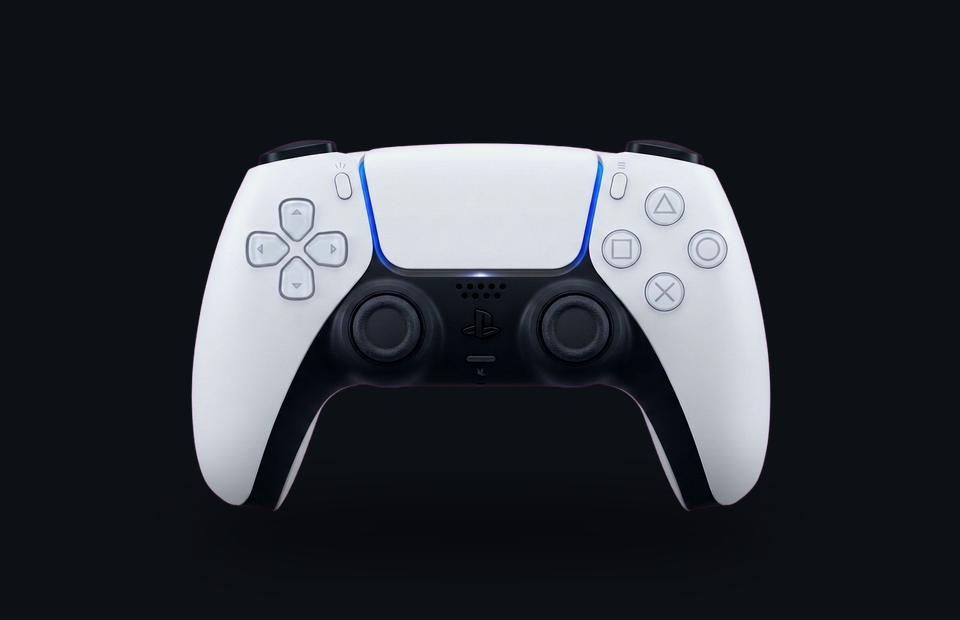
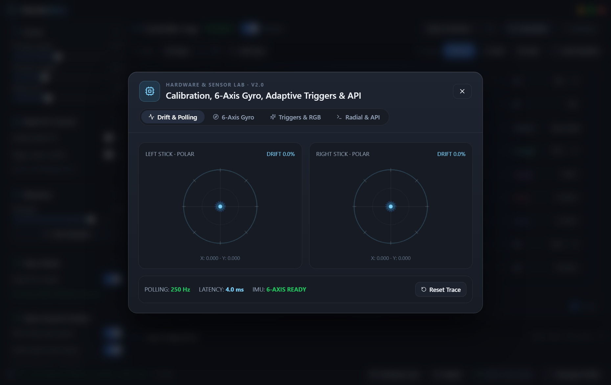
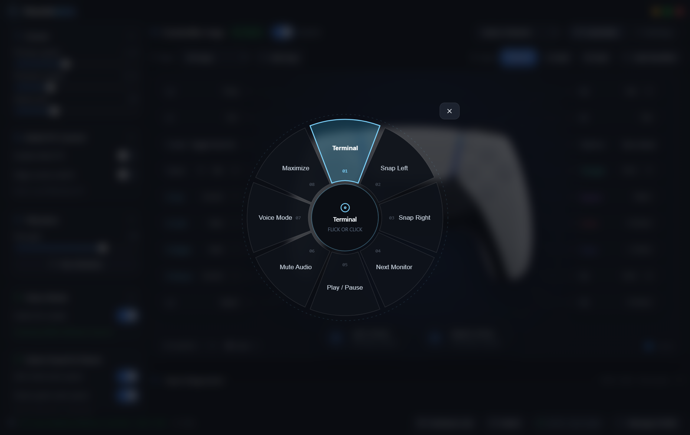
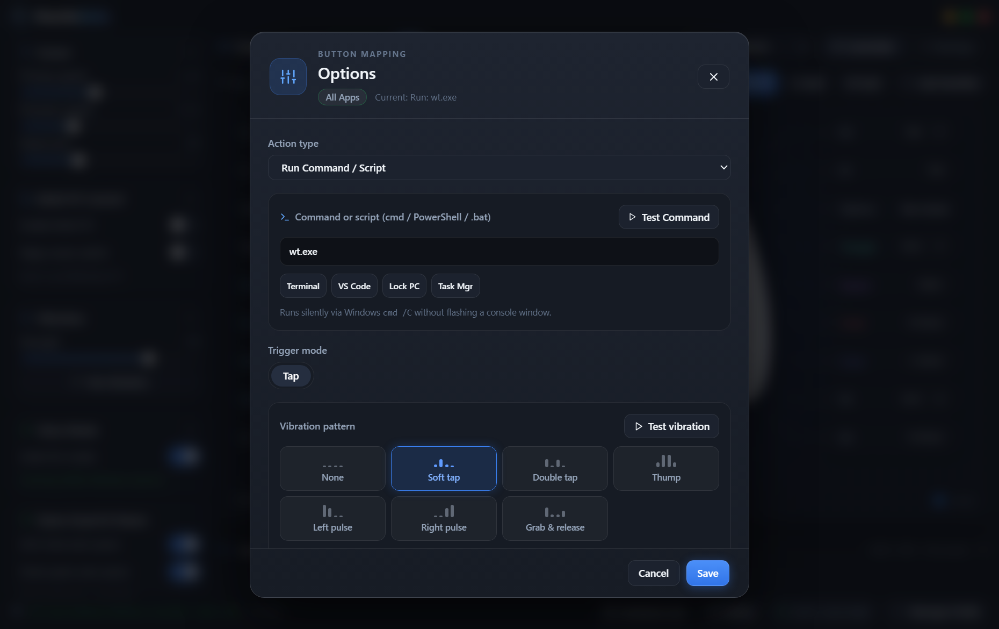

Your game controller, engineered for the Windows desktop.
thumbdesk. turns any Xbox or PlayStation controller into a 120 Hz desktop studio —
dual-stick precision cursor, 6-axis gyro mouse, DualSense adaptive triggers, 8-slice radial wheel,
offline voice command scripts, and automatic anti-cheat & Steam game compliance in one portable .exe.

Test the real thumbdesk. interface right here
Click any controller button to remap shortcuts or shell scripts, switch modifier layers, open the Hardware Lab or Radial Wheel — or plug in a real controller (Web Gamepad API).
Every subsystem, designed for tactile precision
A tour of the actual production surfaces built into thumbdesk. v2.0 — zero bloat, zero external drivers.

Stick Drift Polar Scope & IMU Gyro Mouse
Diagnose analog stick wear directly inside the app with a graduated 45° radar polar scope, deadzone ring, and live millisecond polling telemetry — then pair it with capacitive 6-axis gyro aiming.
- Live Dual-Stick Circularity: Records real-time X/Y stick traces and computes center drift percentage at 120–500 Hz.
- Capacitive Gyro Gating: Rest a thumb on the DualSense touchpad (or hold L2/R1) to activate smooth 6-axis IMU cursor control.
- Subpixel Drift-Free Math: Remainder accumulation ensures micro-adjustments never round away.
DualSense Adaptive Triggers & RGB Lightbar
thumbdesk. writes native DualSense USB HID 0x02 output packets to turn mechanical trigger resistance and lightbar color into real desktop state indicators.
- 5 Mechanical Force Curves: Program
L2andR2with Off, Soft Click (45% detent), Medium Detent, Rigid Wall, or Dual-Stage (hover → click). - Auto Telemetry Lightbar: Cyan = Active, Amber = Anti-Cheat Guard Paused, Emerald = Voice Mode Listening, Purple = Modifier Held, Red = Low Battery.
- 7 Tactile Haptic Waveforms: Left/right motor locality routing for cross-edge sweeps, grab-and-release drags, and confirmations.


8-Slice Obsidian Radial Wheel & Window Tiling
Trigger the translucent radial HUD from any controller button and flick the left stick toward any of 8 indexed slices — no memorizing 40 keyboard shortcuts.
- Native Window Tiling: Snap Left, Snap Right, Maximize, Minimize, and Throw Window to Next Monitor built in.
- Media & Volume Control: Play/Pause, Next/Previous Track, Volume Up/Down, and instant Mute from any slice or button.
- Haptic Slice Feedback: Crisp soft-tap rumble confirms every radial selection.
Run Any Shell Script, Voice Phrase, or API Trigger
Go far beyond key remapping. Bind any controller button or offline voice phrase to execute terminal commands, PowerShell scripts, or .bat workflows silently.
- Silent
cmd /CExecution: One-click preset chips (wt.exe,code ., Lock PC, Task Manager) plus live Test Command button. - Offline Windows Speech: Toggle Voice Mode to trigger custom scripts by voice with zero cloud APIs or subscriptions.
- Localhost Automation API (
127.0.0.1:49152): Let OBS, Stream Deck, VS Code, or CI builds buzz your controller or change lightbar color via HTTP.

120 Hz Cursor Physics & Anti-Cheat Guard
Hover the curve to inspect stick velocity scaling, or review how Game Guard keeps competitive games and Steam Input 100% conflict-free.
| Kernel Anti-Cheats | Vanguard, EAC, BattlEye, FACEIT, Ricochet, EA |
| Guard Behavior | Auto-suspends all synthetic SendInput & Gyro |
| Steam Game Focus | Auto-pauses when \steamapps\common\ focused |
| Steam Launchers | One-click Steam Input & Big Picture URIs |
| Auto-Updater | Background preload + SHA-256 + atomic swap |
| Multi-PC LAN | NDJSON v2 TCP/UDP cross-screen edge handoff |
| macOS Import | Auto-converts Vibe Controller GAPE.json |